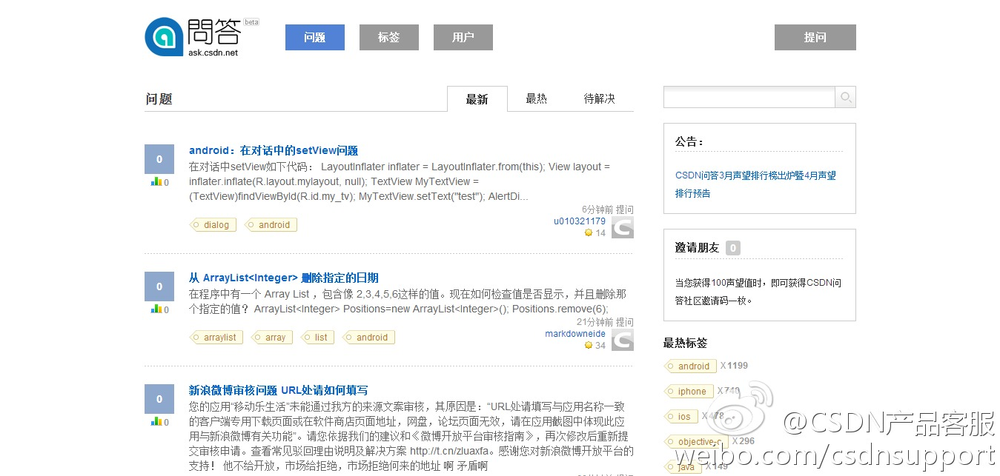

这种文化的公司，换个老板可能就会不行了，因为机制没建立起来，下面的员工也没培养起来。//@胡宁: 这段子表现出国内公司典型的敬畏上司，无原则讨领导欢心的倾向。回国这些年，感觉下属们普遍很＂乖＂。老板提出的意见，即使再微不足道甚至可能是错的，优先级自然是最高的，加班加点地处理。---:抱歉，作者已设置仅展示半年内微博，此微博已不可见。
如果没选择用脚投票走人，那就说明还不够苦逼，至少付出和获得的比例还在接受范围内。//@云计算之私有云研究:这是类似于某司“奋斗者” 的价值软胁迫,某种程度上造成“劣币”公司(公司很成功但员工很苦逼)驱逐“良币”公司(员工爽,公司完蛋,如Moto,欧企),根本问题是对劣币的惩罚(违法用工)没跟上---:抱歉，作者已设置仅展示半年内微博，此微博已不可见。
这才是真正原因。//@尹锴_ink:劳务市场是多寡头垄断市场，大多数劳动者没有议价能力是必然的。这是工会和劳工保护法律存在的经济基础。 //@Ada李力:如果没选择用脚投票走人，那就说明还不够苦逼，至少付出和获得的比例还在接受范围内。---:抱歉，作者已设置仅展示半年内微博，此微博已不可见。
去年我才开始接触云计算社区，那时认识了程辉，看着他在云计算浪潮里迅速崛起，有许多方法可圈可点，也值得大家学习和借鉴。也祝愿程辉在接下来的创业路上，走得更顺畅。@程辉:花了两个晚上写的，为保证准确，还重新查了一些资料，把我在这次OpenStack Summit所经历、所思考的整理了一下，欢迎讨论，重点在最后一段：《OpenStack Summit见闻与思考》网页链接
这种例子屡见不鲜。//@vinW://@李不凯:唉，这个问题也要反过来看。以我在新浪的经历来说，过度的唯领导论是能带来表面上的高效执行力，但同时也会导致战略摇摆不定跟着老板的突发奇想来回转的情况，新浪微博从媒体到社交再从社交回归媒体的定位摇摆就是明证啊---:抱歉，作者已设置仅展示半年内微博，此微博已不可见。
CSDN问答产品目前还是邀请制度，内容集中在移动开发领域，已经积累了2000多个问题，200多个活跃专家。@CSDN产品客服:#产品动态# CSDN移动问答频道@CSDN移动问答 ，新增加了公告栏。三月份的CSDN问答频道声望排行榜已经出炉 网页链接 
去年年底在@CSDN移动问答 上提了个初级问题，网页链接 有三个人帮着回答了。而我今天才想起来应该去点一下“采纳”答案，表示对回答者的感谢。国内问答社区，是不是很多像我这样的用户？很着急地上来问问题，看到有人给回答了，也不做任何动作，只是心里默默感谢？